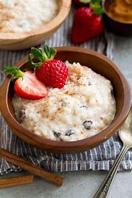

Rice Pudding

Description
Have this creamy rice pudding cooking in the oven while you make dinner and round off your meal with a comforting pud. Serve with jam for a feel-good treat
Ingredients
- butter, for the dish
- 130g pudding rice
- 70g caster sugar
- 2 tsp vanilla bean paste or 1 vanilla pod, split and seeds scraped out
- 800ml whole milk
- 170ml double cream
- grating of nutmeg
- fruit jam of your choice, to serve (strawberry or apricot work well)
Steps
- Heat the oven to 160C/140C fan/gas 3 and butter a 1.5-litre baking dish.
- Put the pudding rice, sugar, vanilla, milk and cream in a bowl and stir to combine.
- Pour the mixture into the prepared dish and grate over a generous layer of nutmeg.
- Bake for 1 hr 30 mins until a brown skin has formed on top and the rice is cooked and tender.
- Leave to cool slightly, then scoop the warm pudding into bowls and serve with a dollop of jam on top.
Link back to Homepage